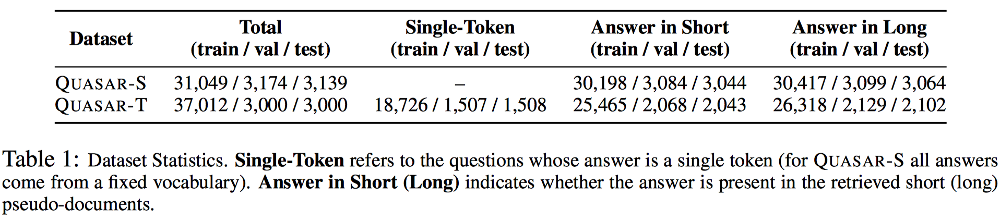

Notes for “Quasar: Datasets for Question Answering by Search and Reading”
Type
QUASAR-S
cloze-style questions constructed from definitions of software entities available on the popular website Stack Overflow
QUASAR -T
collected from various internet sources by a trivia enthusiast. The answers to these questions are free-form spans of text, though most are noun phrases.
Size

Resouces
https://github.com/bdhingra/quasar
Source
QUASAR-S
For QUASAR-S we construct the knowledge source by collecting top 50 threads 2 tagged with each entity in the dataset on the Stack Overflow website.
QUASAR-T
For QUASAR -T we use ClueWeb09 (Callan et al., 2009), which contains about 1 billion web pages collected between January and February 2009.
Question Form
QUASAR-T
a total of 52,000 free-response style questions remaining. The questions range in difficulty, from straightforward (“Who recorded the song ‘Rocket Man”’ “Elton John”) to difficult (“What was Robin Williams paid for Disney’s Aladdin in 1982” “Scale $485 day + Picasso Painting”) to debatable (“According to Earth Medicine what’s the birth totem for march” “The Falcon”)
QUASAR-S
The software question set was built from the definitional “excerpt” entry for each tag (entity) on StackOverflow. Each preprocessed excerpt was then converted to a series of cloze questions using a simple heuristic: first searching the string for mentions of other entities, then repleacing each mention in turn with a placeholder string

Related
Open-Domain QA
- TREC-QA: Both dataset construction and evaluation were done manually, restricting the size of the dataset to only a few hundreds.
- M OVIES QA: the task is to answer questions about movies from a background corpus of Wikipedia articles.100k questions, however many of these are similarly phrased and fall into one of only 13 different categories; hence, existing systems already have ∼ 85% accuracy on it (Watanabe et al., 2017).
- MS MARCO: real-world queries collected from Bing search logs, but many of them not factual, which makes their evaluation tricky
Reading Comprehension
- TriviaQA were obtained using a commercial search engine, making it difficult for researchers to vary the retrieval step of the QA system in a controlled fashion; in contrast we use ClueWeb09, a standard corpus.
- SearchQA (Dunn et al., 2017) is another recent dataset aimed at facilitating research towards an end-to-end QA pipeline, however this too uses a commercial search engine, and does not provide negative contexts not containing the answer, making research into the retrieval component difficult.
Baseline Methods
- Language models: n-gram, BiRNN
- Reading Comprehension Models: GA, BiBADF
- Heuristic Models: MF-i, MF-e
Results
The best performing baselines achieve 33.6% and 28.5% on Q UASAR -S and Q UASAR -T, while human performance is 50% and 60.6% respectively
Metrics
- Evaluation is straightforward on QUASAR-T since each answer comes from a fixed output vocabulary of entities, and we report the average accuracy of predictions as the evaluation metric
- Exact match and F1 match for QUASAR-T